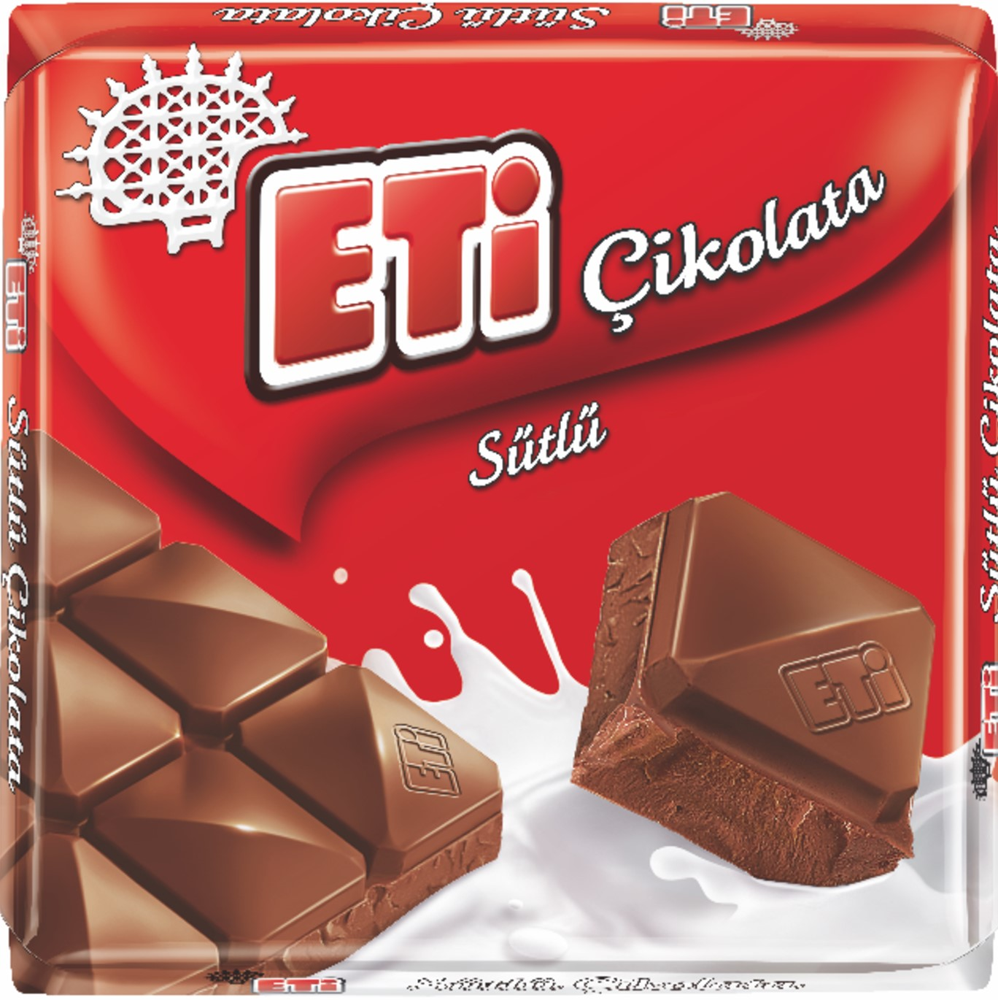

Sütlü Çikolata
Eti Sütlu Çikolata, Türkiye'nin en sevilen markalarından biri olan Eti'nin lezzetli bir atıştırmalık ürünüdür. Ürün, yüksek kaliteli malzemeler kullanılarak üretilmekte ve benzersiz bir tat ve aroma sunmaktadır. Herkesin beğenisini kazanan bu ürün, çay, kahve veya tek başına atıştırmalık olarak tüketilebilir.